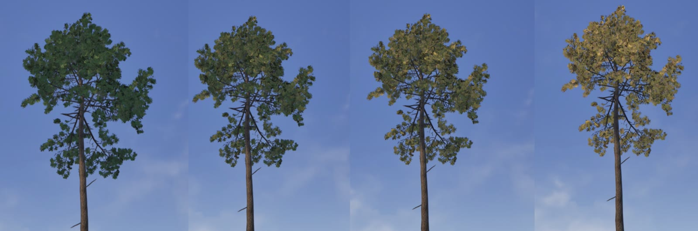
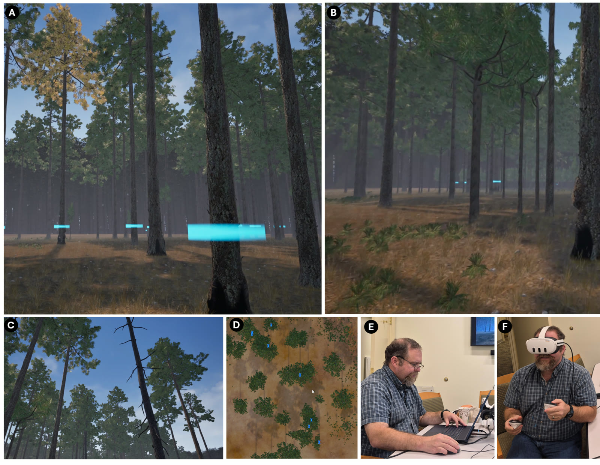
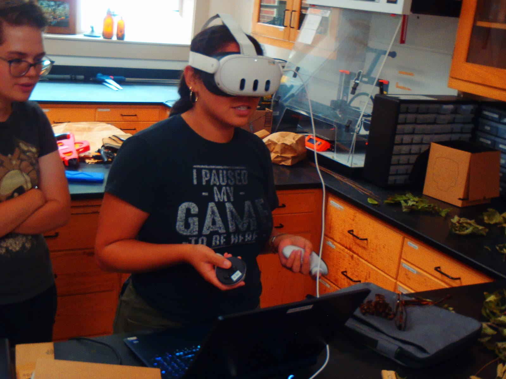
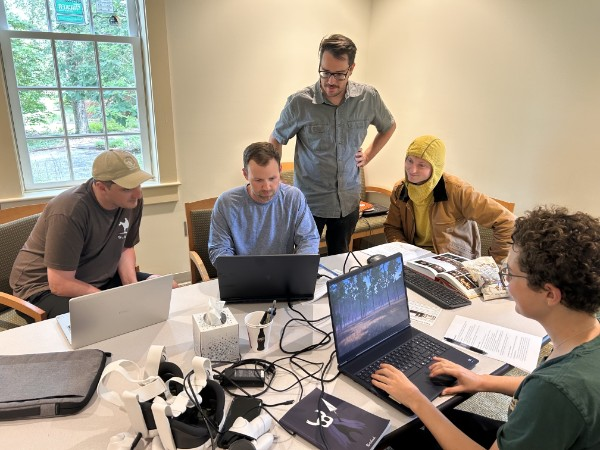

Pinescape simulates tree defects like chlorosis, shown here progressing from healthy green to chlorotic yellow.

Mark adult trees, grass stage seedlings, snags, and other defects on foot, then review the whole stand from an aerial view. Playable on PC or in VR.

Our team steps into the forest (virtually) to help build and test Pinescape.

Pinescape is built for education and training, bringing forestry practice into the classroom.
 Gallery
Gallery